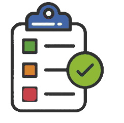

<ion-fab vertical="center" horizontal="end" slot="fixed" (click)="addLugarTrabajo()" style="margin-right: 10px;">
  
    <div class="downArrow bounce">
        <div > <p style="font-size: 12px;margin-right: 2px">  <strong>Crear lugar de trabajo</strong> </p>  
        </div> 
        <div style="margin-left: 18px"> <ion-icon name="arrow-down"></ion-icon> </div> 
    </div>
  
    <ion-fab-button color="secondary"> 
      <ion-icon name="add"></ion-icon>
    </ion-fab-button>
</ion-fab>


<div [@listAnimation]="lugares.length"
    (@listAnimation.start)="logAnimation($event)"
    (@listAnimation.done)="logAnimation($event)">
<ion-list *ngFor="let item of lugares">
        <ion-item-sliding>
          <ion-item (click)="goToQuestions(item)" >
              <mat-card class="example-card" >
                  <mat-card-header>
                    <div mat-card-avatar class="example-header-image"></div>
                    <mat-card-title>{{item.lugarTrabajo}}</mat-card-title>
                    <mat-card-subtitle>{{item.fecha|date}}</mat-card-subtitle>
                  </mat-card-header>
                  

                  <mat-card-content>
                    
                  </mat-card-content>
                  <mat-card-actions>
                    <button mat-button>Calificacion: 80%</button>
                  </mat-card-actions>
                </mat-card>
              
            </ion-item>
      
          <ion-item-options side="end">
              <ion-item-option color="danger" (click)="deleteHallazgo(item.lugarTrabajoID)">
                  <ion-icon slot="start" name="trash"></ion-icon>
                  Eliminar
              </ion-item-option>
              <ion-item-option color="secondary" (click)="openModal(item.hallazgoID)">
                  <ion-icon slot="start" name="md-create"></ion-icon>
                  Editar
              </ion-item-option>
              <ion-item-option color="success" *ngIf="item.preguntasAbiertas<1">
                  <ion-icon slot="start" name="cloud-upload"  (click)="uploadHallazgo(item.lugarTrabajoID)"></ion-icon>
                  Subir
              </ion-item-option>
          </ion-item-options>
        </ion-item-sliding>
      
</ion-list>
</div>
<!--
  <ion-list>
      <ion-list-header>
          <ion-label>Zona auditada</ion-label>
        </ion-list-header>
    <ion-item (click)="goToQuestions(1)">
        <ion-thumbnail slot="start">
            
        </ion-thumbnail>
      <ion-label>
        <h3>Escritorio de ejemplo</h3>
        <p>Sin area capturada</p>
      </ion-label>
      <ion-icon name="close-circle" slot="end"></ion-icon>
    </ion-item>
</ion-list>
-->

